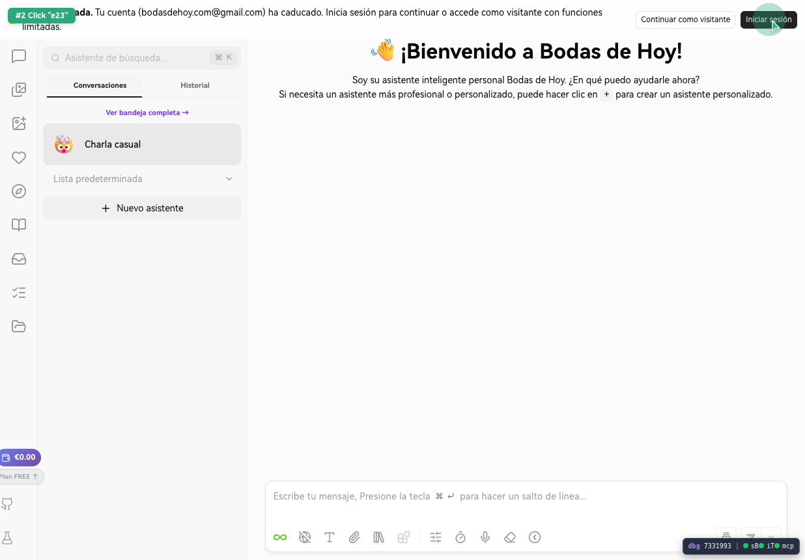
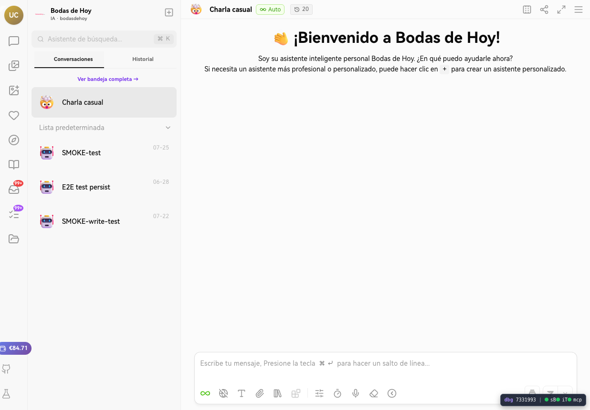
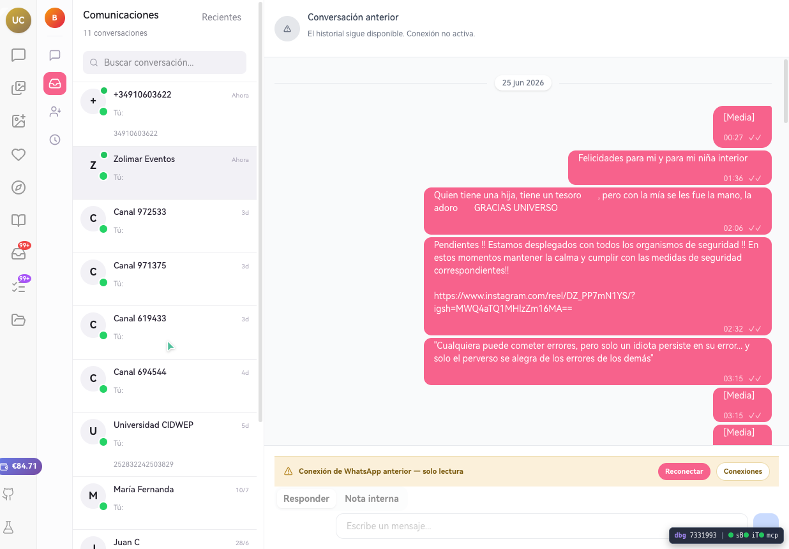

QA rápida sobre `chat-dev`
Ronda centrada en login, bandeja, pendientes, archivos y estabilidad visible de sesión. La prueba se ejecutó como usuario real en `chat-dev.bodasdehoy.com`, buscando confirmar si los fallos previos seguían presentes y si el sistema recuperaba un estado utilizable con sesión válida.
Resumen ejecutivo
La sesión sí puede recuperarse con login válido, y eso deja operativas partes del sistema que en pruebas anteriores devolvían estado visitante. Sin embargo, el sistema no puede considerarse estable: la ruta `Pendientes para ti` continúa redirigiendo incorrectamente a `asistente`, y el frontend sigue emitiendo errores de autenticación y consultas `MCP` incluso después de iniciar sesión.
La bandeja carga conversaciones reales y mantiene un compositor de respuesta libre, pero la interfaz sigue sin diferenciar claramente capacidades de canal como “solo plantillas” o “solo lectura”. `Files` mejora respecto a lo visto antes porque ya no cae en modo visitante y muestra una pantalla funcional mínima.
Matriz de resultados
| Área | Resultado | Observado | Impacto |
|---|---|---|---|
| Home visitante | Con errores | La portada muestra modal `Sesión expirada` y consola con errores de auth/MCP antes de loguear. | La experiencia inicial ya arranca contaminada por un estado de sesión roto. |
| Login | Parcialmente OK | Tras iniciar sesión desaparecen los CTAs de visitante y aparece saldo/estado de cuenta. | La autenticación entra, pero no limpia por completo los errores técnicos del frontend. |
| Bandeja | OK con reservas | Carga conversaciones reales y permite abrir un hilo con compositor visible. | La funcionalidad principal existe, pero la UX de permisos/capacidades sigue ambigua. |
| Pendientes para ti | KO | Click en `Pendientes para ti` navega a `https://chat-dev.bodasdehoy.com/asistente`. | Regresión reproducible en navegación. Bloquea acceso directo al módulo esperado. |
| Archivos | Mejorado | `/files` ya no rebota a visitante; muestra buscador y botón `Subir`. | Se aprecia mejora frente a la incidencia anterior de sesión inconsistente. |
| Asistente | Inestable | Consola mantiene warnings de JWT inválido, timeout de seguridad y `ERR_ABORTED` en stream. | El flujo principal sigue comprometido por estado de autenticación/contexto. |
Hallazgos
Crítico `Pendientes para ti` sigue roto
Con sesión válida, pulsar `Pendientes para ti` vuelve a redirigir a `asistente`, en lugar de abrir el módulo de pendientes. La reproducción fue directa desde una conversación abierta en bandeja y el navegador cambió la URL a `https://chat-dev.bodasdehoy.com/asistente`.
Repro: 1. Login correcto en chat-dev 2. Abrir Bandeja 3. Click en "Pendientes para ti" 4. Resultado real: navegación a /asistente 5. Resultado esperado: pantalla/lista de pendientes
Alto El frontend sigue arrastrando errores de autenticación tras login
Incluso después de iniciar sesión, la consola mantiene mensajes como Usuario identificado pero sin JWT válido - necesita re-login y errores `MCP` de usuario no autenticado. Esto indica que la recuperación visual de la sesión no equivale a una normalización completa de identidad/token en todas las capas del frontend.
Consola observada: - Usuario identificado pero sin JWT válido - necesita re-login - Error en query: Usuario no autenticado. Por favor, proporciona un token válido. - Error en query: Cannot return null for non-nullable field CRM_Error.message.
Alto El home visitante ya aparece contaminado por estado roto
Antes de autenticarse, la portada abrió el modal `Sesión expirada` y mostraba errores asociados a auth/MCP. Esto es una mala señal para la resiliencia del estado inicial y sugiere que el visitante hereda un contexto previo o una validación defectuosa antes de que el usuario actúe.
Medio La bandeja sigue sin distinguir claramente permisos de escritura por tipo de canal
En la conversación abierta desde bandeja se mostraron controles genéricos `Responder`, `Nota interna` y un textbox `Escribe un mensaje...`. En esta ronda no apareció ninguna señal explícita de canal “solo plantillas”, “solo lectura” o restricción operativa equivalente.
Medio `Files` mejora, pero solo a nivel superficial
`/files` ya carga una pantalla utilizable con buscador y acción de subida. Aun así, no se validó subida real en esta ronda porque la prioridad fue confirmar el estado de sesión, navegación y regresiones visibles.
Trazas de red útiles
En la actividad de red quedaron registrados estos patrones relevantes:
- `POST https://securetoken.googleapis.com/v1/token` durante login/renovación.
- `POST /api/auth/firebase-login` y `POST /api/auth/sync-user-identity` tras autenticación.
- Múltiples `POST /api/graphql` durante carga de UI.
- Llamadas a `https://api-mcp.eventosorganizador.com/graphql` en el mismo flujo de sesión.
- `net::ERR_ABORTED` en `https://chat-dev.bodasdehoy.com/api/messages/stream?development=bodasdehoy`.
Se guardó un log de red completo para desarrollo en `assets/network.log`.
Recomendaciones para desarrollo
- Corregir el routing de `Pendientes para ti` y añadir una prueba E2E que falle si la URL termina en `asistente` tras el click.
- Revisar la sincronización de JWT tras login en `chat-dev`: la UI entra, pero subsisten consultas que se consideran no autenticadas.
- Investigar el error GraphQL `Cannot return null for non-nullable field CRM_Error.message`, porque está ensuciando la consola y puede ocultar fallos reales.
- Diferenciar visualmente los tipos de canal y sus capacidades: respuesta libre, solo plantilla, solo nota interna, solo lectura.
- Añadir un indicador de `BUILD_ID` o versión visible para QA en entornos `-dev`.
Evidencia adjunta


